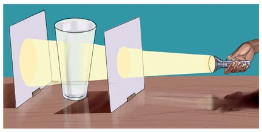

Experiment 6: Investigating transfer of light in straight line
Aim:
To demonstrate transfer of light in a straight line
Materials:
A glass of water, opaque paper, two perforated papers, torch, water and accessible application tools
Procedure
1.
Place the glass of water on a desk.
2.
Position the perforated paper in front of the glass.
3.
Place the opaque paper on the opposite side of the glass.
4.
Direct the torch beam at the perforated paper and observe it as shown/described in Figure 7.Can you see the light on the opaque paper?

5.
Replace the glass of water with a second perforated paper.Ensure it is aligned with the first perforated paper.Record your observations.
6.
Slightly move one of the perforated papers, so that its hole is no longer aligned with the beam.Record your observations